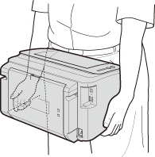

0KXF-049
Este equipo es muy pesado. Para evitar lesiones, asegúrese de realizar el procedimiento siguiente para trasladarlo. No olvide además leer las instrucciones de seguridad antes de comenzar. Instrucciones de seguridad importantes
1
Apague el equipo y el ordenador.
Cuando apague el equipo, los datos que están a la espera de imprimirse se eliminarán.
2
Desconecte los cables y el cable de alimentación del equipo en el orden numérico que se indica en la siguiente ilustración.
El que estén conectados o no un cable USB () y un cable de LAN () depende de su entorno.
 Clavija de toma de corriente Clavija de toma de corriente Cable de alimentación Cable de alimentación Cable USB
Cable de LAN
|
 |
3
Si va a transportar el equipo a una distancia grande, saque el cartucho de tóner. Cómo sustituir los cartuchos de tóner
4
Cierre la bandeja multiuso, la bandeja auxiliar y cualquier otro componente similar y traslade el equipo a su nueva ubicación.
Para transportar el equipo, sujételo por los dos laterales con la parte delantera hacia usted.

5
Coloque el equipo con mucho cuidado en su nueva ubicación.
Para saber cómo proceder después de trasladar el equipo, consulte "Introducción". Manuales incluidos en el equipo